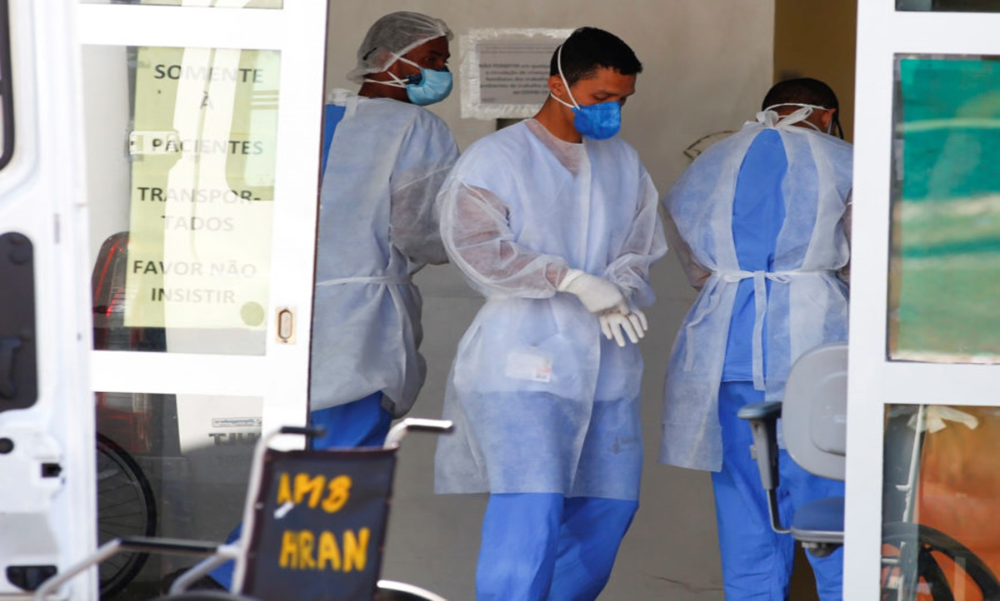

"... Sob pressão da COVID-19, hospitais privados tentam desafogar atendimento..."
Para saber mais clique na foto!
Fonte: Jornal Estado de Minas Gerais
"... SP estuda retomar restrições ao lazer; capital tem 63% de enfermarias ocupadas..."
Para saber mais clique na foto!
Fonte: Site UOL Notícias
"... Governo Doria sabia da chegada da segunda onda COVID a SP..."
Para saber mais clique na foto!
Fonte: Site The Intercept Brasil
"... Pandemia volta a avançar em SP, mas Doria aguarda eleição municipal..."
Para saber mais clique na foto!
Fonte: Site Yahoo Finanças

"... Brasil registra mais de 600 mortes diárias de covid-19 pelo 3º dia seguido..."
Para saber mais clique na foto!
Fonte: Site Poder 360
"... Anvisa rebate Doria sobre aplicação da CoronaVac e questiona Butantan..."
Para saber mais clique na foto!
Fonte: Site UOL Notícias